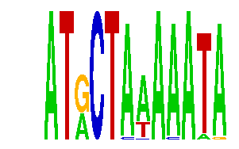

family_7 |
|---|
|  |
| Download PWM |
| Download instances (motifs) |
| Show motif distribution |
Query_ID | Query_Consensus | Subject_Name | Source_DB | Subject_ID | Length | Orientation | Offset | Divergence | Overlap | Subject_Consensus |
|---|---|---|---|---|---|---|---|---|---|---|
| family_7 | ATGCTAAAAATA | MEF2A | JASPAR | MA0052.1 | 10 | reverse-complement | 3 | 0.544 | 9 | CTATTTATAG |
| family_7 | ATGCTAAAAATA | CTAWWWATA | JASPAR | PF0028 | 9 | as given | 3 | 0.692 | 9 | CTATAAATA |
Sequence | Start_position (from start) | Start_position (from end) | Average conservation | Best conservation score | Instance_with_best_CS | Best_Z-score | Instance_with_best_ZS | Strand |
|---|---|---|---|---|---|---|---|---|
| chr15:58113700-58116100 | 2320 | 2332 | 0.00275 | 0.007 | ATRCTAAAMATA | 20.719866 | ATRCTAMAAATA | 1 |
| chr2:142476800-142478542 | 827 | 839 | 0.15025 | 0.504 | ATRCTAWAAATA | 17.97142 | ATRCTAWAAATA | -1 |
| chr17:63104600-63105952 | 555 | 567 | 0.215167 | 0.329 | ATRCTAWAAATA | 17.97142 | ATRCTAWAAATA | 1 |
| chr5:93356681-93358377 | 762 | 774 | 0.00483333 | 0.014 | ATRCTAAAAAWA | 16.6978 | ATRCTAAAAAWA | -1 |
| chr4:56891900-56894200 | 1425 | 1437 | 0.032 | 0.097 | ATRCTAMAAATA | 17.97142 | ATRCTAWAAATA | -1 |
| chr1:40239815-40241400 | 611 | 623 | 0.02525 | 0.047 | ATRCTAWAAATA | 17.97142 | ATRCTAWAAATA | 1 |
| chr4:13200600-13201942 | 1141 | 1153 | 0.0253333 | 0.048 | ATRCTAMAAATA | 22.845715 | ATRCTAAAAATR | 1 |
| chr2:102143300-102144800 | 772 | 784 | 0.419583 | 0.843 | ATRCKAAAAATA | 20.719866 | ATRCTAMAAATA | 1 |
| chr14:47521371-47523176 | 1123 | 1135 | 0.98075 | 1 | ATRCTAWAAATA | 17.97142 | ATRCTAWAAATA | -1 |
| chr8:75111100-75112500 | 957 | 969 | 0.0175 | 0.023 | ATRCTAAAMATA | 29.683191 | ATRCTAAAMATA | -1 |
| chr1:64922679-64924100 | 745 | 757 | 0.000916667 | 0.005 | ATRCTAAAAAWA | 16.6978 | ATRCTAAAAAWA | -1 |
| chr17:65450067-65451067 | 87 | 99 | 0.0600833 | 0.093 | ATRCTAWAAATA | 17.97142 | ATRCTAWAAATA | 1 |
| chr5:93202500-93203900 | 576 | 588 | 0.0025 | 0.006 | ATRCTAAAMATA | 20.719866 | ATRCTAMAAATA | 1 |
| chr1:56913300-56914612 | 912 | 924 | 0.8575 | 0.995 | ATRCTAWAAATA | 20.719866 | ATRCTAMAAATA | 1 |
| chr9:24767135-24768900 | 859 | 871 | 0.850583 | 0.878 | ATRCTAWAAATA | 20.719866 | ATRCTAMAAATA | 1 |
| chr15:76946500-76948697 | 1206 | 1218 | 0.0025 | 0.01 | ATRCTAMAAATA | 22.845715 | ATRCTAAAAATR | -1 |
| chr11:32852000-32854200 | 1568 | 1580 | 0.0338333 | 0.075 | ATRCTAAARATA | 20.719866 | ATRCTAMAAATA | -1 |
| chr14:102196074-102197800 | 163 | 175 | 0.331583 | 0.356 | ATRCTAMAAATA | 29.683191 | ATRCKAAAAATA | -1 |
| chr13:72160600-72162400 | 436 | 448 | 0.00308333 | 0.009 | ATRCTMAAAATA | 16.6978 | ATRCTMAAAATA | -1 |
| chr6:141489000-141490009 | 717 | 729 | 0.0258333 | 0.042 | ATRCTAMAAATA | 29.683191 | ATRCTAAAAATA | 1 |
| chr13:98922400-98924100 | 701 | 713 | 0.01075 | 0.015 | ATRCTAMAAATA | 16.6978 | ATRCTAAAAMTA | -1 |
| chr11:102661600-102663900 | 948 | 960 | 0.0518333 | 0.442 | ATRCTAMAAATA | 29.683191 | ATRCTAAAAATA | 1 |
| chrX:56841600-56843100 | 1064 | 1076 | 0.97375 | 0.999 | ATRCTAWAAATA | 17.97142 | ATRCTAWAAATA | -1 |
| chr17:44365104-44366104 | 266 | 278 | 0.702917 | 0.994 | ATRCTAWAAATA | 17.97142 | ATRCTAWAAATA | 1 |
| chr18:55309900-55311600 | 1004 | 1016 | 0.0779167 | 0.167 | ATRCTAAAMATA | 20.719866 | ATRCTAMAAATA | -1 |
| chr10:39129500-39130700 | 164 | 176 | 0.988083 | 1 | ATRCTAWAAATA | 17.97142 | ATRCTAWAAATA | -1 |
| chr7:129185500-129186700 | 462 | 474 | 0.00475 | 0.011 | ATRCTMAAAATA | 20.719866 | ATRCTAMAAATA | 1 |
| chr13:12220700-12221858 | 876 | 888 | 0.495083 | 0.98 | ATRCTAMAAATA | 20.719866 | ATRCTAMAAATA | -1 |
| chr11:87126500-87128055 | 727 | 739 | 0.799083 | 0.931 | ATRCTAWAAATA | 20.719866 | ATRCTAMAAATA | -1 |
| chr13:46890800-46892400 | 1166 | 1178 | 0.0990833 | 0.144 | ATRCTAMAAATA | 16.6978 | ATRCTMAAAATA | -1 |
| chr2:59202000-59204100 | 583 | 595 | 0.000333333 | 0.002 | ATRCTMAAAATA | 20.719866 | ATRCTAMAAATA | 1 |
| chrX:45835800-45836984 | 284 | 296 | 8.33333e-05 | 0.001 | ATRCTAAAAATR | 22.845715 | ATRCTAAAAATR | -1 |